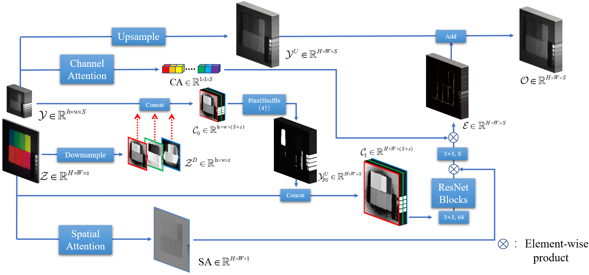
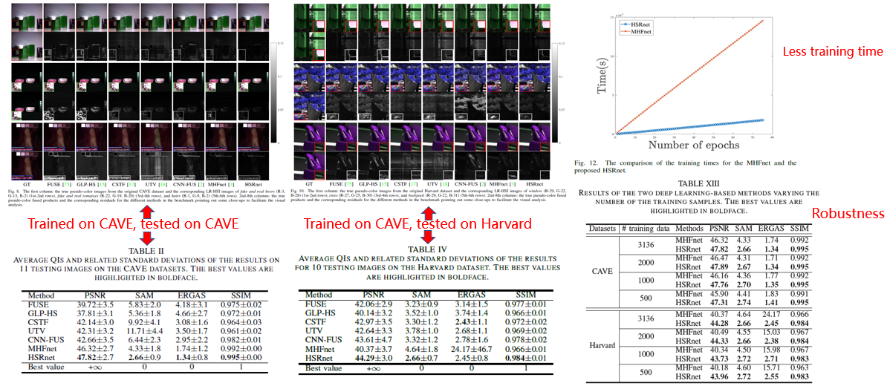

Jin-Fan Hu, Ting-Zhu Huang*, Liang-Jian Deng*, Tai-Xiang Jiang, Gemine Vivone, Jocelyn Chanussot
Hyperspectral images (HSIs) are of crucial importance in order to better understand features from a large amount of spectral channels. Restricted by its inner imaging mechanism, the spatial resolution is often limited for HSIs. To alleviate this issue, in this work, we propose a simple and efficient architecture of deep convolutional neural networks to fuse a low-resolution hyperspectral image (LR-HSI) and a high-resolution multispectral image (HR-MSI), yielding a high-resolution hyperspectral image (HR-HSI). The network is designed to preserve both spatial and spectral information thanks to a new architecture based on i) the use of the LR-HSI at the HR-MSI’s scale to get an output with satisfied spectral preservation and ii) the application of the attention and pixelShuffle modules to extract information, aiming to output high-quality spatial details. Finally, a plain mean squared error loss function is used to measure the performance during the training. Extensive experiments demonstrate that the proposed network architecture achieves the best performance (both qualitatively and quantitatively) compared with recent state-of-the-art hyperspectral image super-resolution approaches. Moreover, other significant advantages can be pointed out by the use of the proposed approach, such as, a better network generalization ability, a limited computational burden, and the robustness with respect to the number of training samples.

Results

Bib Citation
@ARTICLE{Hu2021Hyperspectral,
author={Hu, Jin-Fan and Huang, Ting-Zhu and Deng, Liang-Jian and Jiang, Tai-Xiang and Vivone, Gemine and Chanussot, Jocelyn},
journal={IEEE Transactions on Neural Networks and Learning Systems},
title={Hyperspectral Image Super-resolution via Deep Spatio-spectral Attention Convolutional Neural Networks},
year={2021},
volume={},
number={},
doi = {10.1109/TNNLS.2021.3084682},
}